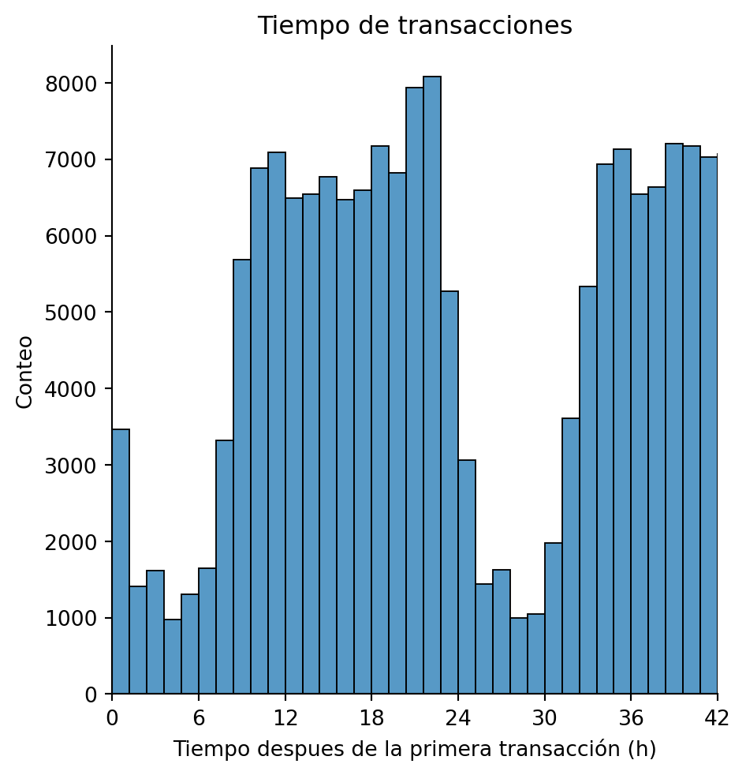
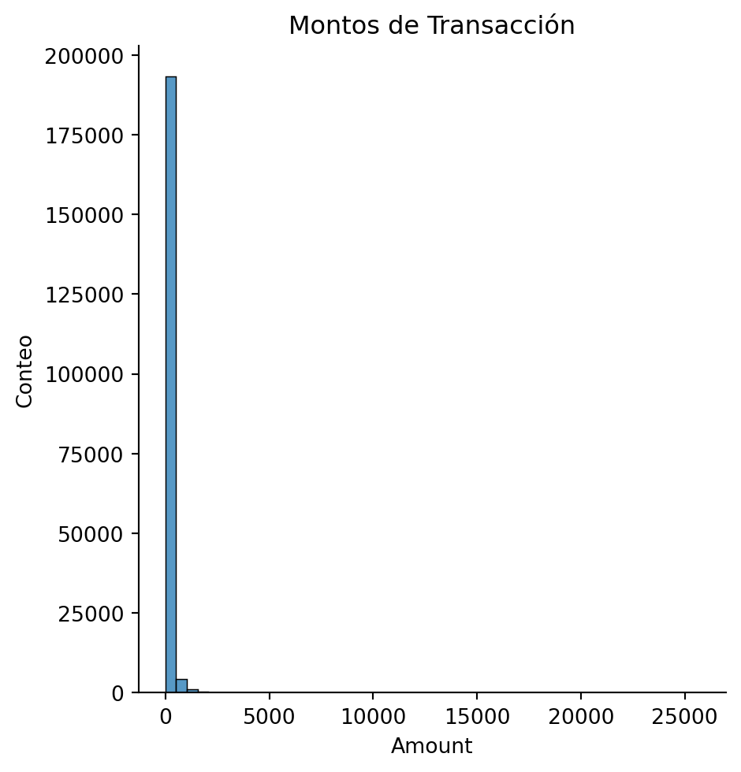

Código
import pandas as pd
pd.options.display.max_columns=None
import numpy as np
import matplotlib.pyplot as plt
import seaborn as sbJoel Burbano
17 de diciembre de 2023
En el presente proyecto se pretende analizar un conjunto de datos de transacciones crediticias recolectadas durante dos días en el mes de de Septiembre del 2013 por European cardholders
Empezaremos por importar las librerias necesarias para realizar el análisis
Procedemos a leer los datos con pandas
Verificamos que cantidad de datos tenemos
Tenemos que existen 31 columnas (variables) y 284807 filas (registros)
Ahora bien procedemos a revisar la calidad de este conjunto de datos
Time False
V1 False
V2 False
V3 False
V4 False
V5 False
V6 False
V7 False
V8 False
V9 False
V10 False
V11 False
V12 False
V13 False
V14 False
V15 False
V16 False
V17 False
V18 False
V19 False
V20 False
V21 False
V22 False
V23 False
V24 False
V25 False
V26 False
V27 False
V28 False
Amount False
Class False
dtype: boolObservamos que no hay variables con datos nulos.
Ahora bien echemos un vistazo a la variable Class la cual contiene la información sobre las transacciones fraudulentas
Notamos que solamente 492 transacciones son fraudulentas
Class
0 0.998273
1 0.001727
Name: proportion, dtype: float64es decir solo el \(0.17\%\) de transacciones son fraudulentas
Ahora bien empecemos a intentar predecir
Ahora bien, se realiza un análisis exploratorio de los datos
count 199364.000000
mean 94675.212852
std 47536.519022
min 0.000000
25% 54039.000000
50% 84588.500000
75% 139243.250000
max 172792.000000
Name: Time, dtype: float64Realicemos una conversión de la variable Time de segundos a horas para facilitar la interpretación
<Figure size 1152x384 with 0 Axes>
Notamos que existen dos picos en la gráfica, el primero entre las 10 y 22 primeras horas y el segundo entre las 34 y 40 horas
Analicemos la variable Amount
count 199364.000000
mean 88.659351
std 247.240287
min 0.000000
25% 5.637500
50% 22.000000
75% 78.000000
max 25691.160000
Name: Amount, dtype: float64realicemos una revisión gráfica
primero un histograma
<Figure size 1152x384 with 0 Axes>
Observemos que los datos se encuentran fuertemente sesgados a la derecha. Para asegurarnos calculamos la asimetría
| Time | V1 | V2 | V3 | V4 | V5 | V6 | V7 | V8 | V9 | V10 | V11 | V12 | V13 | V14 | V15 | V16 | V17 | V18 | V19 | V20 | V21 | V22 | V23 | V24 | V25 | V26 | V27 | V28 | Amount | |
|---|---|---|---|---|---|---|---|---|---|---|---|---|---|---|---|---|---|---|---|---|---|---|---|---|---|---|---|---|---|---|
| 105644 | 19.340833 | 1.135011 | -0.663898 | 0.703924 | 0.069871 | -0.488154 | 1.312078 | -0.897198 | 0.463148 | -0.478801 | 0.396879 | 0.268544 | 0.752264 | 0.264092 | -0.252977 | 0.515272 | -3.211514 | 1.648897 | -1.297012 | -2.246958 | -0.677938 | -0.331487 | -0.069644 | 0.183987 | -0.618678 | 0.089015 | 0.521419 | 0.086390 | 0.004782 | 1.00 |
| 139790 | 23.155278 | -1.786262 | 1.118886 | 1.347969 | -0.379954 | -1.240680 | 0.467667 | 0.081125 | 0.964933 | 0.042585 | -1.275754 | -1.871478 | 0.375166 | 0.692938 | -0.149358 | -0.396145 | 0.802805 | -0.405073 | 0.153925 | -0.241419 | -0.099266 | -0.047902 | -0.182530 | -0.162509 | -0.405178 | 0.512595 | 0.299398 | -0.042882 | -0.059130 | 141.73 |
| 158758 | 31.034167 | -0.683414 | 0.679341 | 2.615556 | 2.362138 | -0.012716 | 0.603826 | 0.574245 | -0.679978 | -0.811409 | 2.035115 | -0.564418 | -1.407557 | -0.094656 | -0.859411 | 1.749530 | 0.099132 | -0.035668 | -0.053624 | 1.656191 | 0.372610 | -0.007167 | 0.463597 | -0.243134 | 0.084557 | -0.453177 | 2.687676 | -1.084269 | -0.511626 | 36.19 |
| 130845 | 22.067778 | 1.183540 | -0.493000 | 0.755202 | -0.963160 | -0.850295 | 0.145905 | -0.794616 | 0.302199 | 1.656943 | -0.939787 | 1.101727 | 1.138109 | -0.592931 | 0.156943 | 0.903035 | -0.419096 | -0.207755 | 0.403235 | 0.614310 | -0.168134 | 0.039588 | 0.339340 | -0.053125 | -0.298049 | 0.423994 | -0.652284 | 0.102582 | 0.017292 | 1.00 |
| 88908 | 17.318056 | 1.137583 | 0.105478 | 0.784402 | 1.254973 | -0.600870 | -0.360836 | -0.161727 | 0.076092 | 0.280587 | 0.015787 | 1.084154 | 1.016011 | -0.666982 | 0.250706 | -0.835022 | -0.130522 | -0.216624 | -0.058071 | 0.265563 | -0.178887 | -0.195692 | -0.443664 | 0.046270 | 0.516246 | 0.447943 | -0.554949 | 0.031821 | 0.018177 | 7.60 |
---
title: "Detección de fraude con tarjetas de Crédito"
author: "Joel Burbano"
date: 2023-12-17
categories: ['Python']
description: En el presente proyecto se pretende analizar un conjunto de datos de transacciones crediticias.
---
En el presente proyecto se pretende analizar un conjunto de datos de transacciones crediticias recolectadas durante dos días en el mes de de Septiembre del 2013 por European cardholders
Empezaremos por importar las librerias necesarias para realizar el análisis
```{python}
import pandas as pd
pd.options.display.max_columns=None
import numpy as np
import matplotlib.pyplot as plt
import seaborn as sb
```
Procedemos a leer los datos con pandas
```{python}
#df: base de datos de las transacciones
df=pd.read_csv("creditcard.csv.zip")
```
Verificamos que cantidad de datos tenemos
```{python}
df.shape
```
Tenemos que existen 31 columnas (variables) y 284807 filas (registros)
Ahora bien procedemos a revisar la calidad de este conjunto de datos
```{python}
df.isnull().any()
```
Observamos que no hay variables con datos nulos.
Ahora bien echemos un vistazo a la variable `Class` la cual contiene la información sobre las transacciones fraudulentas
```{python}
df["Class"].value_counts()
```
Notamos que solamente 492 transacciones son fraudulentas
```{python}
df['Class'].value_counts(normalize=True)
```
es decir solo el $0.17\%$ de transacciones son fraudulentas
Ahora bien empecemos a intentar predecir
```{python}
from sklearn.model_selection import train_test_split
```
```{python}
X=df.drop(labels='Class',axis=1)
y=df.loc[:,'Class']
X_train, X_test, y_train, y_test=train_test_split(X,y,test_size=0.3,random_state=1, stratify=y)
```
Ahora bien, se realiza un análisis exploratorio de los datos
```{python}
X_train['Time'].describe()
```
Realicemos una conversión de la variable `Time` de segundos a horas para facilitar la interpretación
```{python}
X_train.loc[:,'Time']=X_train.Time/3600
X_test.loc[:,'Time']=X_test.Time/3600
```
```{python}
plt.figure(figsize=(12,4))
sb.displot(X_train['Time'],bins=40,kde=False)
plt.xlim([0,40])
plt.xticks(np.arange(0,48,6))
plt.xlabel('Tiempo despues de la primera transacción (h)')
plt.ylabel('Conteo')
plt.title('Tiempo de transacciones')
plt.show()
```
Notamos que existen dos picos en la gráfica, el primero entre las 10 y 22 primeras horas y el segundo entre las 34 y 40 horas
Analicemos la variable `Amount`
```{python}
X_train['Amount'].describe()
```
realicemos una revisión gráfica
primero un histograma
```{python}
plt.figure(figsize=(12,4))
sb.displot(X_train['Amount'],bins=50,kde=False)
plt.ylabel('Conteo')
plt.title('Montos de Transacción')
plt.show()
```
```{python}
plt.figure(figsize=(12,4))
sb.boxplot(x=X_train["Amount"])
plt.show()
```
Observemos que los datos se encuentran fuertemente sesgados a la derecha. Para asegurarnos calculamos la asimetría
```{python}
X_train['Amount'].skew()
```
```{python}
X_train.head(5)
```